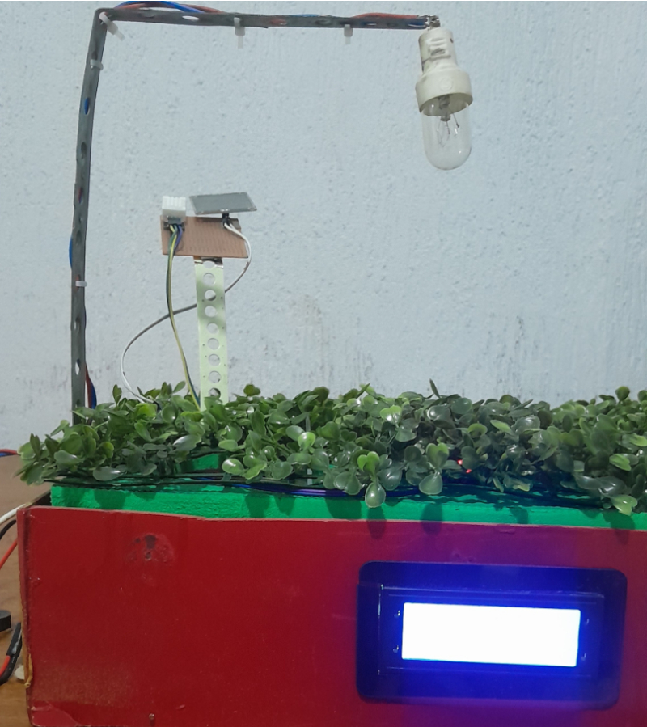

Micro Estação Meteorológica Inteligente com monitoramento online

O presente projeto integrador tem como finalidade o desenvolvimento de uma página web voltada à visualização dos dados coletados por uma micro estação meteorológica. Essa plataforma tem como principal objetivo tornar acessíveis, de forma clara e organizada, informações climáticas captadas por sensores, como temperatura, umidade do ar e solo e a detecção da chuva.
Desenvolvimento
O desenvolvimento do projeto constitiu com a participação de todos dividindo em três grupos.
- Montagem - Integrantes: Daniel Gomes Borges, Nelci Sturmer, Mateus Vinicius Nascimento de Almeida e Fernando Almeida Ferreira da Silva.
- Banco de dados - Integrantes: Eliane Costa Ferreira Silva, Emmilly Fernanda Catalano Santos, Fábio Junior Tavares e Marcos Alberto Godoy.
- Página Web - Integrantes: Vinicius Gabriel Leite de Souza, Elder Rodrigo de Almeida, Luana Caroline Moraes e Otavio Henrique dos Santos.
Para cada grupo, o desenvolvimento é feito em três etapas, esboço, aplicação e finalização.
Esboço: Nesta fase inicial, são definidas as ideias preliminares e conceitos fundamentais do projeto. O grupo realiza pesquisas, elabora rascunhos e organiza o planejamento das atividades. É o momento de explorar possibilidades, levantar hipóteses e estruturar a base do que será desenvolvido nas etapas seguintes.
Aplicação: Com o esboço consolidado, passa-se para a execução prática das ideias. Nesta etapa, o grupo coloca em prática o planejamento elaborado anteriormente, utilizando ferramentas e técnicas adequadas ao objetivo do trabalho. É um momento de experimentação e construção efetiva, onde ajustes ainda podem ser feitos conforme necessário.
Finalização: A última etapa consiste no refinamento do trabalho realizado. O grupo revisa o conteúdo produzido, corrige eventuais erros, aprimora a apresentação e prepara o produto final para entrega ou exibição. Aqui, o foco é garantir a qualidade, coesão e clareza do material, consolidando todo o processo de desenvolvimento.
Desenvolvimento do Projeto
1.Esboço
Na fase de planejamento, foram definidos os parâmetros ambientais a serem monitorados: temperatura, umidade do ar e do solo, sensor de chuva e a necessidade de acionamento remoto representada por uma lâmpada. Os componentes escolhidos foram:
- ESP32 (microcontrolador)
- DHT22 (sensor de temperatura e umidade do ar)
- HW-28 (sensor de chuva)
- HW-80 (sensor de umidade do solo)
- Display LCD 16x2 com I2C
- IDE Arduino para programação
- GitHub + GitHub Pages para hospedagem da página
Também foi planejada uma página web interativa e um banco de dados para visualização e registro dos dados.
2. Aplicação
Durante a montagem e programação:
- Sensores conectados ao ESP32 com protoboard, respeitando os limites elétricos.
- Display LCD integrado via I2C nos pinos GPIO21 e GPIO22.
- Código desenvolvido na IDE Arduino com bibliotecas específicas.
- Servidor web local implementado no ESP32 com HTML, acessível via IP.
- Página web desenvolvida no Visual Studio Code usando HTML, CSS e JavaScript.
- Integração inicial com banco de dados via arquivos PHP e SQL.
Os dados serão atualizados em tempo real na página com intervalos de 5 a 10 segundos.
3. Finalização
Na etapa final:
- Leitura regular dos sensores com tratamento de erros.
- Envio de dados para a interface web via IP fixo.
- Servidor HTTP no ESP32 acessível local ou remotamente via DDNS.
- Visualização organizada dos dados com opção de evolução futura.
- Possibilidade de uso de gráficos dinâmicos e plataformas como Blynk ou ThingSpeak.
O projeto é gratuito, independente e pronto para futuras expansões.